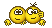

margin-top: 100px; margin: 35px 0;
height: 40px;
font-size + line-height 
Структура робочого каталогу:
work/
2015-11/
plodove/
html/
css/
styles.css
images/
image1.jpg
image2.jpg
sprite.png
index.html
psd/
maket.zip
maket.psd
sprite.psd
futbolki_20151104.zip
Обнулення стилів браузера:
html { padding:0; margin:0;}
body { position:relative; margin:0; padding:0; color:#666; font:normal 18px/28px Helvetice, Arial, sans-serif; background:#fff;}
.clr:after { content:""; display:block; height:0; overflow:hidden; font-size:0; line-height:0; clear:both;}
p { margin:0; padding:10px 0;}
a { color:#0000ff; text-decoration:underline;}
a:hover { color:#7777ff;}
a img { border:none;}
h1, h2, h3, h4, h5, h6 { margin:0; padding:0; font-weight:bold; color:#000;}
strong { font-weight:bold;}
em { font-style:italic;}
form, menu, iframe { display:block; margin:0; padding:0; border:none;}
ol, ul, dl, li, dt, dd { margin:0; padding:0; list-style:none;}
* { outline:none;}
Заняття 9a.
9a.1. Специфічні селектори CSS.
A B - задає стилі для всіх елементів B, що знаходяться всередині тега A на будь-якому рівні вкладення.
A > B - задає стилі лише для дочірніх елементів першого рівня.
A ~ B - задає стилі для всіх елементів B, що слідують після елемента A.
A + B - задає стилі для елемента B, що йде одразу після елемента A.
<p><span><a href="#">Link</a></span></p>
p a { color: green;}
p > span { background: red;}
p > a { background: green;} /* не буде працювати */
<p class="nobel">Some text.</p>
<p>...</p>
<h2>Header</h2>
.nobel ~ h2 { color: green;}
.nobel + p { color: blue;}
.nobel + h2 { color: navy;} /* не буде працювати */
[атрибут] - задає стилі для елементів, у яких задано атрибут.
[атрибут="значення"] - задає стилі для елементів, у яких задано атрибут та конкретне значення.
[href^="ftp://"] - вибирає елементи, у яких вказаний атрибут починається з вказаного значення.
[href$=".png"] - вибирає елементи, у яких вказаний атрибут закінчується вказаним значенням.
[href*="google"] - вибирає елементи, у яких значення вказаного атрибута містить строку, вказану у значенні.
[class~="green"] - вибирає елементи у яких в значенні атрибута є задана підстрока, відділена пробілами від інших підстрок.
Виділити червоним і жирним всі елементи, в яких використовуються внутрітегові стилі:
[style] { color: red; font-weight: bold;}
Добавити рамку до зображень, в яких атрибут alt має значення "Фото":
img[alt="Фото"] { border: 2px solid #aaa;}
Всі посилання на FTP зробити зеленого кольору:
a[href^="ftp://"] { color: green;}
Всі посилання на gif-файли зробити сірого кольору:
a[href$=".gif"] { color: #777;}
Сховати всі посилання, які містять в собі підстроку "yandex":
a[href*="yandex"] { display: none;}
Вибирає всі елементи в яких є клас "green" і задає їм зелений колір:
[class~="green"] { color: green;}
.green { color: green;} /* виконує ту саму дію */